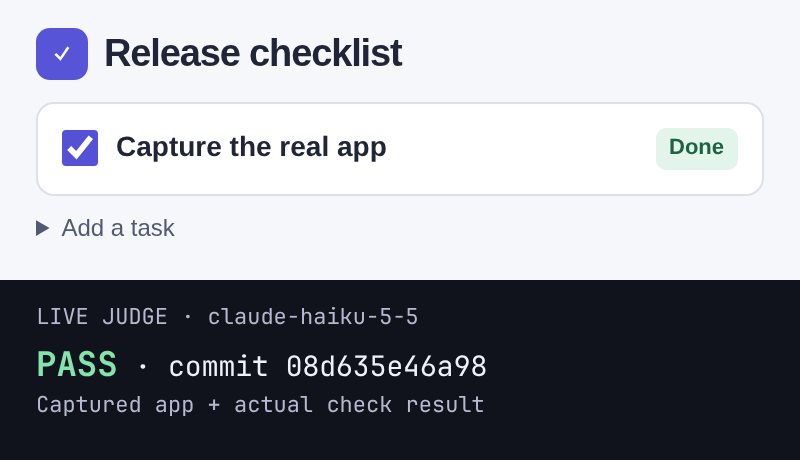

Prove your app really works.
A command-line check of real screenshots, recordings and output.
For developers using coding agents.
Tests pass. Your agent says “done”. The app is still broken.

START HERE · NODE 22.18+ + GIT
npm install -g done-done-axi
cd your-app && done-done init
done-done doctorHow it works
Drive the real product.
Your agent follows the recipe and saves screenshots or output, tied to the exact commit.
Show the claim is true.
A fresh judge reads each capture. Wrong output fails; uncertainty never becomes a pass.
Save a receipt.
A pass records the commit and file hashes. No judge pass, no receipt.
init asks which coding agent and which judge to use, then writes your repo’s setup and a capture recipe. You choose both agents and models. doctor checks setup, not the product: it names missing pieces and how to fix them.
Review and commit the recipe and verify skill, then describe what a user should be able to do:
done-done verify --outcome "<what a user can now do>"Bring your own signed-in agent or API key. Captures go to the judge’s provider on your plan or key. Need no-sudo installation, non-interactive flags or a manual capture? Read the manual walkthrough.
Prefer to ask your agent “is this really done?” Install the agent skill: npx skills add umeranjum17/done-done-axi --skill done-done -a <agent> -y.
Why
“Done” is easy to say. Screenshots get reused, recordings go stale, and a green test run is not the app.
done-done runs your capture and ties every screenshot, recording and log it saves to the exact commit. When someone says “done”, it checks the proof they point to: is it really there, is it a real picture or video, is it from this commit, and is it new? If not, the check fails. If it can't tell, it says so instead of passing.
No proof, no “done”.
Want to see what passes and what stops? The worked demo shows recording, a judged pass, stale or empty evidence, blank frames and a config typo. Its judge is a disclosed stub, not a live model. The first-screen capture above is different: a real browser-app screenshot and its live claude-haiku-5-5 verdict, tied to the displayed sample-app commit.
What it checks
- The real product, not code checks. Proof comes from driving the app the way a user does; a journey that only runs tests, typecheck or lint is refused.
- The core journey and the upgrade users take. Each app names the one flow a user cannot live without, end to end on the real target; an app users install also proves the upgrade over its last release, not only a fresh install.
- The journeys your change needs.
affectedmaps a diff to the journeys it touches through the verify skill's feature map, runs the core journey when it cannot tell, and fails until a receipt for the commit covers them. - Tied to a commit. Every run records the commit, and whether there were uncommitted changes.
- Real media. Empty, cut-off, blank or tiny screenshots fail. Videos must hold real frames.
- Fresh, and not reused. Proof from an older commit fails, and so does proof reused for a different claim.
- Shows the outcome. A fresh, tools-off judge on your own plan or key says whether each capture is the right screen for the claim. There is no way to turn it off.
- Honest claims. A pull request's
## Checksblock must have every line filled in, andlintgates it with no model. - Verifiable later.
receiptrecords a passing check against the commit and the sha256 of every file it cited. - Looks right.
designandlookcatch squashed or clipped text, overlap and pages wider than the screen.
Every answer is an exit code: 0 pass, 1 fail, 2 usage or config error, 3 can't tell, 4 a run is still running or waits at its gate.
Alone, and with the other tools
done-done works on its own: neither the CLI nor the skill needs another tool in this family. Each tool does one job and connects through small written contracts.
done-done
Verification. This page.
sign-off
The board where agents ask you questions. done-done signoff writes a run's gate or evidence in its format; it posts only when you opt in with --post.
learn-from-mistakes
Retros that find mistakes your agents keep repeating, with evidence.
first-draft
Turns a prompt into design mocks. Pass one to done-done design --mock to judge a screen next to it.
Inside Firstmate, or outside
done-done behaves the same with or without Firstmate. Nothing here is needed to use it.
Inside a Firstmate home, integrations/firstmate/ ships a brief include that tells each worker to run a journey, write a ## Checks block, pass check and record a receipt, and an optional merge gate that refuses a merge without it. A lone agent in a terminal skips all of that. Upstream Firstmate does not call the merge gate yet; run it by hand if you want it to enforce the check. Integration instructions.